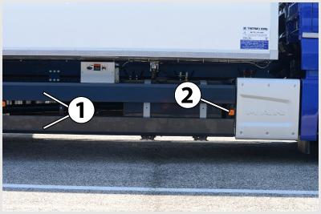
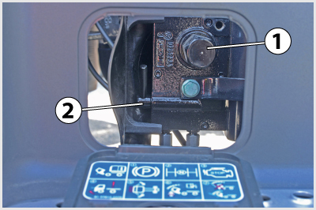
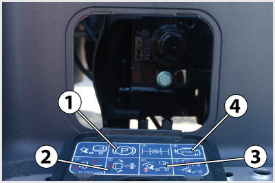
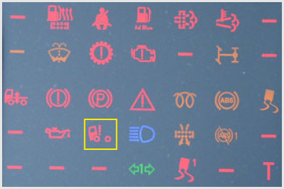
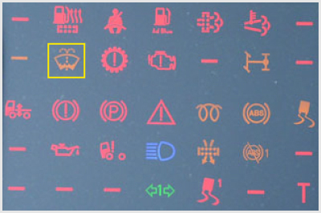
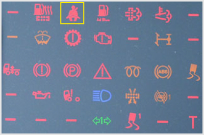

<!DOCTYPE html>
<html lang="hu">
<head>
    <meta charset="UTF-8" />
    <meta name="viewport" content="width=device-width, initial-scale=1.0" />
    <title>Vázszerkezet, vezetőfülke, segédberendezések – „C” kategória - Szerkezeti és üzemeltetési ismeretek</title>
    <meta property="og:site_name" content="KRESZ teszt &ndash; „C” kategória - Szerkezeti és üzemeltetési ismeretek" />
    <meta property="og:description" content="Vázszerkezet, vezetőfülke, segédberendezések kérdések és helyes válaszok („C” kategória - Szerkezeti és üzemeltetési ismeretek)" />
    <link rel="stylesheet" href="../test.css" />
</head>
<body>
    <div class="topic-header">
        <nav class="topic-breadcrumbs">
            <a href="index.html" class="crumb-link">&laquo; „C” kategória - Szerkezeti és üzemeltetési ismeretek témakörei</a>
            <span class="crumb-sep">/</span>
            <span class="crumb-current">Vázszerkezet, vezetőfülke, segédberendezések</span>
            <span class="crumb-sep">/</span>
            <a href="../../index.html" class="crumb-home">Interaktív teszt &raquo;</a>
        </nav>

        <div class="topic-title-section">
            <span class="topic-badge">Témakör 1 / 24</span>
            <h2>Vázszerkezet, vezetőfülke, segédberendezések <small class="topic-badge-info">(33 kérdés, vizsgán: 1 db., 1 pont)</small></h2>
        </div>

        <div class="topic-nav-bar">
            <span class="nav-btn nav-disabled">&laquo; Előző témakör</span>
            <a href="index.html" class="nav-btn nav-hub-btn">Témakörök listája</a>
            <a href="group-1668680156.html" class="nav-btn nav-next-btn" title="Tachográf">Következő témakör &raquo;</a>
        </div>
    </div>

    <div class="group" id="group-1668680011">
        <div class="questions">
            <div class="question" id="question-704429">
                                                                        <!-- <h4>1. A gépkocsi klímaberendezése (légkondicionáló)...</h4> -->
                        <dl>
                            <dt>1. A gépkocsi klímaberendezése (légkondicionáló)... <a href="#question-704429"><small>#704429</small></a></dt>
                                                            <dd class="correct">egy különálló hűtő-, fűtő-, légszárító és nedvesítőberendezés, amely a vezető-, illetve utastér klimatizálására szolgál.</dd>
                                                            <dd class="">a motor által beszívott levegő megfelelő hőmérsékletének beállítására szolgál.</dd>
                                                            <dd class="">a motorok hidegindításának megkönnyítésére szolgáló előmelegítő berendezés.</dd>
                                                    </dl>
                    </div>
                                                            <div class="question" id="question-704459">
                                                                        <!-- <h4>2. Milyen feladatot láthat el a gépkocsira szerelt csörlőberendezés?</h4> -->
                        <dl>
                            <dt>2. Milyen feladatot láthat el a gépkocsira szerelt csörlőberendezés? <a href="#question-704459"><small>#704459</small></a></dt>
                                                            <dd class="correct">Az elakadt járművek kihúzása (beleértve az önmentést is), illetve különféle tárgyaknak a gépkocsihoz, esetleg a gépkocsi rakfelületére húzása.</dd>
                                                            <dd class="">Nehéz tárgyak felemelése.</dd>
                                                            <dd class="">Műszaki hibás gépkocsik vontatása.</dd>
                                                            <dd class="">Vontatmánybiztosítás, rakományrögzítés.</dd>
                                                    </dl>
                    </div>
                                                            <div class="question" id="question-704488">
                                                                        <!-- <h4>3. Hány és milyen állása van a teherjárművek billenő rakfelületét vezérlő szelepnek?</h4> -->
                        <dl>
                            <dt>3. Hány és milyen állása van a teherjárművek billenő rakfelületét vezérlő szelepnek? <a href="#question-704488"><small>#704488</small></a></dt>
                                                            <dd class="correct">Három állása: emelés, süllyesztés, illetve nyugalmi helyzet.</dd>
                                                            <dd class="">Két állása: emelés és süllyesztés.</dd>
                                                            <dd class="">Négy állása: emelés, süllyesztés, stop és reteszelt helyzet.</dd>
                                                    </dl>
                    </div>
                                                            <div class="question" id="question-704538">
                                                                        <!-- <h4>4. Milyen a tehergépjárművek és pótkocsik vázszerkezetének kialakítása?</h4> -->
                        <dl>
                            <dt>4. Milyen a tehergépjárművek és pótkocsik vázszerkezetének kialakítása? <a href="#question-704538"><small>#704538</small></a></dt>
                                                            <dd class="correct">A tehergépjárművek és pótkocsik általában alvázkeretes kialakításúak.</dd>
                                                            <dd class="">A tehergépjárművek és pótkocsik felépítményét padlóvázra szerelik.</dd>
                                                            <dd class="">A tehergépjárművek és pótkocsik karosszériája önhordó kivitelű.</dd>
                                                            <dd class="">A tehergépjárművek és pótkocsik karosszériája általában félönhordó kivitelű.</dd>
                                                    </dl>
                    </div>
                                                            <div class="question" id="question-704565">
                                                                            <div class="exercise-image">
                                
                            </div>
                                                <!-- <h4>5. Mire szolgálnak a képen látható tehergépkocsi 1-es jelű alkatrészei?</h4> -->
                        <dl>
                            <dt>5. Mire szolgálnak a képen látható tehergépkocsi 1-es jelű alkatrészei? <a href="#question-704565"><small>#704565</small></a></dt>
                                                            <dd class="correct">Ezek az oldalsó aláfutásgátlók (aláesésgátlók).</dd>
                                                            <dd class="">Ezek az alvázkeret hossztartói.</dd>
                                                            <dd class="">Ezek a légtartályok.</dd>
                                                    </dl>
                    </div>
                                                            <div class="question" id="question-704583">
                                                                            <div class="exercise-image">
                                
                            </div>
                                                <!-- <h4>6. A képen látható tehergépkocsi alváz 1-es jelű alkatrésze...</h4> -->
                        <dl>
                            <dt>6. A képen látható tehergépkocsi alváz 1-es jelű alkatrésze... <a href="#question-704583"><small>#704583</small></a></dt>
                                                            <dd class="correct">a hátsó aláfutásgátló.</dd>
                                                            <dd class="">az alváz kereszttartója.</dd>
                                                            <dd class="">a pótkocsi vontatására szolgáló vonószerkezet.</dd>
                                                            <dd class="">a rakomány beemelésére szolgáló emelőszerkezet.</dd>
                                                    </dl>
                    </div>
                                                            <div class="question" id="question-704632">
                                                                            <div class="exercise-image">
                                
                            </div>
                                                <!-- <h4>7. A képen látható szerkezet...</h4> -->
                        <dl>
                            <dt>7. A képen látható szerkezet... <a href="#question-704632"><small>#704632</small></a></dt>
                                                            <dd class="correct">egy kézi működtetésű fülkebillentő szivattyúja.</dd>
                                                            <dd class="">egy kézi működtetésű felépítmény billentő szivattyúja.</dd>
                                                            <dd class="">a rögzítőfék működtetése.</dd>
                                                            <dd class="">a szervokormány olajszint-ellenőrző és olajleeresztő egysége.</dd>
                                                    </dl>
                    </div>
                                                            <div class="question" id="question-704633">
                                                                            <div class="exercise-image">
                                
                            </div>
                                                <!-- <h4>8. A képen látható fülkebillentő szivattyú adattáblán az 1-es jelű piktorgram arra utal, hogy...</h4> -->
                        <dl>
                            <dt>8. A képen látható fülkebillentő szivattyú adattáblán az 1-es jelű piktorgram arra utal, hogy... <a href="#question-704633"><small>#704633</small></a></dt>
                                                            <dd class="correct">a fülkebillentést a rögzítőfék behúzása után végezzük.</dd>
                                                            <dd class="">a fülkebillentést a rögzítőfék oldása után végezzük.</dd>
                                                    </dl>
                    </div>
                                                            <div class="question" id="question-704713">
                                                                            <div class="exercise-image">
                                
                            </div>
                                                <!-- <h4>9. Mire figyelmeztet a képen a bekeretezett visszajelző lámpa?</h4> -->
                        <dl>
                            <dt>9. Mire figyelmeztet a képen a bekeretezett visszajelző lámpa? <a href="#question-704713"><small>#704713</small></a></dt>
                                                            <dd class="correct">Arra, hogy a fülkebillentő rendszer nincs megfelelően reteszelve.</dd>
                                                            <dd class="">Arra, hogy a billenő felépítmény nincs megfelelően reteszelve.</dd>
                                                            <dd class="">Arra, hogy a tompított fényszóró magasság beállítása nem megfelelő.</dd>
                                                    </dl>
                    </div>
                                                            <div class="question" id="question-704756">
                                                                        <!-- <h4>10. Mikor és mennyi időre ajánlott a szellőzést belső keringetésre kapcsolni a gépjármű üzemeltetése során?</h4> -->
                        <dl>
                            <dt>10. Mikor és mennyi időre ajánlott a szellőzést belső keringetésre kapcsolni a gépjármű üzemeltetése során? <a href="#question-704756"><small>#704756</small></a></dt>
                                                            <dd class="correct">Csak akkor célszerű, ha a kinti kellemetlen szagok vagy füst bejutását akarjuk megakadályozni. Utána ki kell kapcsolni, mert a szélvédő párásodhat, illetve elhasználódik a vezető- és utastér levegője.</dd>
                                                            <dd class="">Bármeddig lehet, mert így a szellőzés és a fűtés energiafelhasználása kisebb lesz.</dd>
                                                            <dd class="">Párás időben célszerű, mert a belső keringetés elősegíti a párátlanítást a szélvédőn.</dd>
                                                    </dl>
                    </div>
                                                            <div class="question" id="question-704766">
                                                                        <!-- <h4>11. Milyen helyzetben állítható meg a billenő rakterű járműveknél a billenő felépítmény?</h4> -->
                        <dl>
                            <dt>11. Milyen helyzetben állítható meg a billenő rakterű járműveknél a billenő felépítmény? <a href="#question-704766"><small>#704766</small></a></dt>
                                                            <dd class="correct">Bármely megemelt helyzetben megállítható.</dd>
                                                            <dd class="">Csak a két szélső helyzetben lehet megállítani.</dd>
                                                            <dd class="">Csak a két szélső és a félig megemelt helyzetben lehet megállítani.</dd>
                                                            <dd class="">Terhelten csak a szélső helyzetekben, üresen bármely helyzetben rögzíthető.</dd>
                                                    </dl>
                    </div>
                                                            <div class="question" id="question-704772">
                                                                        <!-- <h4>12. Mi a passzív biztonsági berendezések rendeltetése?</h4> -->
                        <dl>
                            <dt>12. Mi a passzív biztonsági berendezések rendeltetése? <a href="#question-704772"><small>#704772</small></a></dt>
                                                            <dd class="correct">A passzív biztonsági berendezések mérséklik a bekövetkezett balesetek káros következményeit.</dd>
                                                            <dd class="">A passzív biztonsági berendezések elősegítik a balesetek megelőzését.</dd>
                                                    </dl>
                    </div>
                                                            <div class="question" id="question-704776">
                                                                        <!-- <h4>13. A biztonsági öv működése akkor megfelelő, ha...</h4> -->
                        <dl>
                            <dt>13. A biztonsági öv működése akkor megfelelő, ha... <a href="#question-704776"><small>#704776</small></a></dt>
                                                            <dd class="correct">hirtelen megrántáskor megakad, és nem mozdul tovább kifelé.</dd>
                                                            <dd class="">kis húzásra már megakad, és nem mozdul tovább kifelé.</dd>
                                                            <dd class="">hirtelen megrántáskor megakad, majd lassan tovább mozdul kifelé.</dd>
                                                    </dl>
                    </div>
                                                            <div class="question" id="question-704795">
                                                                        <!-- <h4>14. Milyen részekből áll az alvázkeret?</h4> -->
                        <dl>
                            <dt>14. Milyen részekből áll az alvázkeret? <a href="#question-704795"><small>#704795</small></a></dt>
                                                            <dd class="correct">Két hossztartóból és több kereszttartóból.</dd>
                                                            <dd class="">Két hossztartóból.</dd>
                                                            <dd class="">Egy hossztartóból és több kereszttartóból.</dd>
                                                    </dl>
                    </div>
                                                            <div class="question" id="question-704827">
                                                                        <!-- <h4>15. A gépjármű ablakait biztonsági üvegből készítik. Mire jelent ez a gyakorlatban?</h4> -->
                        <dl>
                            <dt>15. A gépjármű ablakait biztonsági üvegből készítik. Mire jelent ez a gyakorlatban? <a href="#question-704827"><small>#704827</small></a></dt>
                                                            <dd class="correct">Ha az ablak pl. ütközés során kitörik, a keletkező szilánkok nem okoznak mély sérülést.</dd>
                                                            <dd class="">Ütközés során az ablakok nem törnek ki.</dd>
                                                            <dd class="">Megnehezíti a gépjármű eltulajdonítását azáltal, hogy az üveget nem lehet betörni.</dd>
                                                    </dl>
                    </div>
                                                            <div class="question" id="question-704889">
                                                                        <!-- <h4>16. Mi az aktív biztonsági berendezések rendeltetése?</h4> -->
                        <dl>
                            <dt>16. Mi az aktív biztonsági berendezések rendeltetése? <a href="#question-704889"><small>#704889</small></a></dt>
                                                            <dd class="correct">Az aktív biztonsági berendezések elősegítik a balesetek megelőzését.</dd>
                                                            <dd class="">Az aktív biztonsági berendezések mérséklik a bekövetkezett balesetek káros következményeit.</dd>
                                                    </dl>
                    </div>
                                                            <div class="question" id="question-704943">
                                                                        <!-- <h4>17. Az állóhelyi fűtés...</h4> -->
                        <dl>
                            <dt>17. Az állóhelyi fűtés... <a href="#question-704943"><small>#704943</small></a></dt>
                                                            <dd class="correct">egy előre beállított időpontban, vagy távvezérlő jelére aktiválja a fűtőrendszert, ezzel növelve a vezető kényelmét, és kialakításánál fogva alkalmas lehet a motor hűtőrendszerének előmelegítésére is.</dd>
                                                            <dd class="">akkor működik, amikor a járművel megállunk, mert ekkor a menetszél nem tudná a vezetőfülkébe bejuttatni a motor hőjét.</dd>
                                                            <dd class="">léghűtéses motoroknál biztosítja az utastér fűtését.</dd>
                                                    </dl>
                    </div>
                                                            <div class="question" id="question-714653">
                                                                            <div class="exercise-image">
                                
                            </div>
                                                <!-- <h4>18. Mire figyelmeztet a képen a bekeretezett visszajelző lámpa?</h4> -->
                        <dl>
                            <dt>18. Mire figyelmeztet a képen a bekeretezett visszajelző lámpa? <a href="#question-714653"><small>#714653</small></a></dt>
                                                            <dd class="correct">Az ablakmosó tartályában alacsony a folyadékszint.</dd>
                                                            <dd class="">Az ablakmosó folyadéktartálya nem megfelelő folyadékkal van feltöltve.</dd>
                                                            <dd class="">Az ablakmosó folyadéktartálya befagyott.</dd>
                                                    </dl>
                    </div>
                                                            <div class="question" id="question-714654">
                                                                        <!-- <h4>19. Mi a csörlőberendezés alkalmazásának célja?</h4> -->
                        <dl>
                            <dt>19. Mi a csörlőberendezés alkalmazásának célja? <a href="#question-714654"><small>#714654</small></a></dt>
                                                            <dd class="correct">Elakadt járművek mentése, saját elakadt jármű önmentése, elromlott járművek, nehéz tárgyak rakfelületre vontatása.</dd>
                                                            <dd class="">Meghibásodott jármű vontatása vonórúd hiányában.</dd>
                                                            <dd class="">Konténer raktérre történő felrakása és rögzítése.</dd>
                                                            <dd class="">Kerékcsere esetén a jármű emelése.</dd>
                                                    </dl>
                    </div>
                                                            <div class="question" id="question-714670">
                                                                        <!-- <h4>20. A tehergépkocsik és a pótkocsik vázszerkezete általában miért alvázkeretes?</h4> -->
                        <dl>
                            <dt>20. A tehergépkocsik és a pótkocsik vázszerkezete általában miért alvázkeretes? <a href="#question-714670"><small>#714670</small></a></dt>
                                                            <dd class="correct">Ez a megoldás nagyobb erők (terhek) elviselésére alkalmas és egy alváztípusra többféle felépítmény felszerelését teszi lehetővé.</dd>
                                                            <dd class="">Így nagyobb haladási sebesség érhető el, különösen kanyarban.</dd>
                                                            <dd class="">Így jóval kisebb lehet a jármű menetkész tömege.</dd>
                                                            <dd class="">Mert csak így oldható meg a vonójármű és a pótkocsi összekapcsolása.</dd>
                                                    </dl>
                    </div>
                                                            <div class="question" id="question-714671">
                                                                        <!-- <h4>21. Mit akadályoz meg a tehergépkocsikra és pótkocsikra szerelt aláfutásgátló?</h4> -->
                        <dl>
                            <dt>21. Mit akadályoz meg a tehergépkocsikra és pótkocsikra szerelt aláfutásgátló? <a href="#question-714671"><small>#714671</small></a></dt>
                                                            <dd class="correct">Baleset esetén személygépkocsik aláfutását a tehergépkocsi, vagy pótkocsi alváza alá.</dd>
                                                            <dd class="">Pótkocsi felkapcsolása esetén a vonóháromszög beszorulását a tehergépjármű alá.</dd>
                                                            <dd class="">Élő állatok bejutását a tehergépjármű alá.</dd>
                                                            <dd class="">Illetéktelen személyek behatolását a tehergépkocsi alá.</dd>
                                                    </dl>
                    </div>
                                                            <div class="question" id="question-714672">
                                                                        <!-- <h4>22. Amikor a billenthető vezetőfülke megfelelően rögzített, reteszelt állapotban van, akkor a műszerfalon található ellenőrző lámpa...</h4> -->
                        <dl>
                            <dt>22. Amikor a billenthető vezetőfülke megfelelően rögzített, reteszelt állapotban van, akkor a műszerfalon található ellenőrző lámpa... <a href="#question-714672"><small>#714672</small></a></dt>
                                                            <dd class="correct">nem világít.</dd>
                                                            <dd class="">folyamatosan világít.</dd>
                                                    </dl>
                    </div>
                                                            <div class="question" id="question-714674">
                                                                            <div class="exercise-image">
                                
                            </div>
                                                <!-- <h4>23. Mire figyelmeztet a képen a bekeretezett visszajelző lámpa?</h4> -->
                        <dl>
                            <dt>23. Mire figyelmeztet a képen a bekeretezett visszajelző lámpa? <a href="#question-714674"><small>#714674</small></a></dt>
                                                            <dd class="correct">A biztonsági övek bekapcsolására.</dd>
                                                            <dd class="">A légzsákrendszer hibájára.</dd>
                                                            <dd class="">A vezetőülés rugózásának hibájára.</dd>
                                                    </dl>
                    </div>
                                                            <div class="question" id="question-714675">
                                                                        <!-- <h4>24. Hogyan működik az esőérzékelő ablaktörlő?</h4> -->
                        <dl>
                            <dt>24. Hogyan működik az esőérzékelő ablaktörlő? <a href="#question-714675"><small>#714675</small></a></dt>
                                                            <dd class="correct">Az ablaktörlőrendszer önműködően felismeri az eső intenzitását, és ahhoz igazítja az ablaktörlő működését.</dd>
                                                            <dd class="">Eső esetén a visszajelző lámpa jelzi, hogy milyen fokozatba kell kapcsolni az ablaktörlő motorját.</dd>
                                                            <dd class="">Ha eláll az eső, kikapcsolja a vezető által működtetett ablaktörlőt, így kímélve a szerkezetet és megnövelve annak élettartamát.</dd>
                                                    </dl>
                    </div>
                                                            <div class="question" id="question-714676">
                                                                        <!-- <h4>25. Hogyan viselkedik a többrétegű, ragasztott szélvédőüveg sérülés esetén (betörik a szélvédő)?</h4> -->
                        <dl>
                            <dt>25. Hogyan viselkedik a többrétegű, ragasztott szélvédőüveg sérülés esetén (betörik a szélvédő)? <a href="#question-714676"><small>#714676</small></a></dt>
                                                            <dd class="correct">A repedések pókhálószerűen helyezkednek el, de nem törik súlyos sérülést okozó darabokr! aszélvédő.</dd>
         ! �         �0                  `              !��nq-iRs="">A r`g�szpñq miatt a szélvédő egybef Ewik ki a jàr�űből, ӭ'q nem k$l�Ukeznek sC�r��mG-st�o�=zó éles &el�lete+.<$d>,
    " (!                                           � $b0"   <td`kdaSw="">Az üveg(aPvó, borsószem �ag;ságú d`r�bokra törik,(aMalyek kcrknlhatnak, de nem okoznak mély sér¼�ést.</dd>
          � f          !"�(!0 `(   �  b      ( $ `</El>
  $ 0"              </div>
                  ""()!               �  b `0 A(  ( $      <div class="questaoN& id="question-754f57�
b                  ( $     0 `(                          $ 0"          <!-- <h42�> Melyek!a� aktív biztonsági!b�rendezC�s'k?</h4> -->
  �0                   <dn>         �0  �  b          <dt<2>/ Melyek az aktít jhztonsáGi�rAvuldezések? <a href=&#!weRtiofm5677"><small>#7146574.small><-a7=�dt>
            ! �    " (!! �    0 `(          ! �           ( `d"cd`ss="correct">Kétkörös fékrendszer, megfelelő gumiabroncs, nagy fényerejű, helyesen beállított fényszórók, ABS, ASR, ESP stb.</dd>
                                                            <dd class="">Biztonsági övek, övfeszítők, légzsákok, biztonsági szélvédő stb.</dd>
                                                            <dd class="">Biztonsági kocsitest, besüllyesztett ajtókilincsek, energiaelnyelő zónák, aláfutásgátlók stb.</dd>
                                                            <dd class="">Tűzoltó készülék, elakadásjelző háromszög, láthatósági mellény.</dd>
                                                    </dl>
                    </div>
                                                            <div class="question" id="question-714678">
                                                                        <!-- <h4>27. Melyek a passzív biztonsági berendezések?</h4> -->
                        <dl>
                            <dt>27. Melyek a passzív biztonsági berendezések? <a href="#question-714678"><small>#714678</small></a></dt>
                                                            <dd class="correct">Légzsákok, biztonsági kormányoszlop, biztonsági övek, fejtámlák stb.</dd>
                                                            <dd class="">Nagyteljesítményű motor, megfelelő fényerősségű fényszóró, fűthető hátsó szélvédő, ablakmosó- berendezés stb.</dd>
                                                            <dd class="">Fűthető hátsó szélvédő, menetdinamikai szabályozórendszer (ESP), az útviszonyoknak megfelelő mintázatú, jó állapotú gumiabroncs stb.</dd>
                                                    </dl>
                    </div>
                                                            <div class="question" id="question-714679">
                                                                        <!-- <h4>28. Mi mutatja, hogy működőképes a légzsák?</h4> -->
                        <dl>
                            <dt>28. Mi mutatja, hogy működőképes a légzsák? <a href="#question-714679"><small>#714679</small></a></dt>
                                                            <dd class="correct">A gyújtás bekapcsolásakor a műszerfalon levő ellenőrző lámpa rövid ideig világít, majd kialszik.</dd>
                                                            <dd class="">A gyújtás bekapcsolását követően a műszerfalon levő ellenőrző lámpa folyamatosan világít.</dd>
                                                            <dd class="">Nem jelzi vissza semmi, csak szervízben, diagnosztikai műszerrel lehet ellenőrizni a működőképességét.</dd>
                                                            <dd class="">Csak ebben az esetben lehet bekapcsolni a biztonsági övet.</dd>
                                                    </dl>
                    </div>
                                                            <div class="question" id="question-721228">
                                                                            <div class="exercise-image">
                                
                            </div>
                                                <!-- <h4>29. A képen látható fülkebillentő szivattyún az 1-es jelű hatlapfejű alkatrészre kell helyezni a...</h4> -->
                        <dl>
                            <dt>29. A képen látható fülkebillentő szivattyún az 1-es jelű hatlapfejű alkatrészre kell helyezni a... <a href="#question-721228"><small>#721228</small></a></dt>
                                                            <dd class="correct">a fülkebillentésre szolgáló kézi hajtószár kulcsát.</dd>
                                                            <dd class="">megfelelő méretű villáskulcsot.</dd>
                                                            <dd class="">a megfelelő méretű csillagkulcsot.</dd>
                                                    </dl>
                    </div>
                                                            <div class="question" id="question-721229">
                                                                        <!-- <h4>30. Milyen részekből áll a hidraulikus fülkebillentő-rendszer?</h4> -->
                        <dl>
                            <dt>30. Milyen részekből áll a hidraulikus fülkebillentő-rendszer? <a href="#question-721229"><small>#721229</small></a></dt>
                                                            <dd class="correct">A szivattyúból, a kettős működésű munkahengerből és a fülkereteszelő berendezésből.</dd>
                                                            <dd class="">A szivattyúból és a fülkereteszelő berendezésből.</dd>
                                                            <dd class="">A szivattyúból és a kettős működésű munkahengerből.</dd>
                                                    </dl>
                    </div>
                                                            <div class="question" id="question-721230">
                                                                        <!-- <h4>31. Ha a visszajelző lámpa jelzi az ablakmosó-tartályban levő folyadék szintjének csökkenését, akkor ennek a lámpának a színe...</h4> -->
                        <dl>
                            <dt>31. Ha a visszajelző lámpa jelzi az ablakmosó-tartályban levő folyadék szintjének csökkenését, akkor ennek a lámpának a színe... <a href="#question-721230"><small>#721230</small></a></dt>
                                                            <dd class="correct">sárga.</dd>
                                                            <dd class="">villogó zöld.</dd>
                                                            <dd class="">kék.</dd>
                                                            <dd class="">piros.</dd>
                                                    </dl>
                    </div>
                                                            <div class="question" id="question-721231">
                                                                        <!-- <h4>32. A billenthető vezetőfülkéjű gépjármű billenő fülkéjét hány rögzítőrendszerrel kell felszerelni?</h4> -->
                        <dl>
                            <dt>32. A billenthető vezetőfülkéjű gépjármű billenő fülkéjét hány rögzítőrendszerrel kell felszerelni? <a href="#question-721231"><small>#721231</small></a></dt>
                                                            <dd class="correct">Legalább két, egymástól független rögzítőrendszerrel, melyek közül az egyik meghibásodása nem vonhatja maga után a másik meghibásodását.</dd>
                                                            <dd class="">Legalább egy rögzítőrendszerrel, de annak biztonságosnak kell lennie.</dd>
                                                            <dd class="">Legalább három, egymástól független rögzítőrendszerrel, amelyek közül az egyik meghibásodása nem vonhatja maga után a másik kettő meghiábásodását.</dd>
                                                    </dl>
                    </div>
                                                            <div class="question" id="question-721232">
                                                                        <!-- <h4>33. A klímaberendezés milyen módon végzi el a szélvédő párátlanítását?</h4> -->
                        <dl>
                            <dt>33. A klímaberendezés milyen módon végzi el a szélvédő párátlanítását? <a href="#question-721232"><small>#721232</small></a></dt>
                                                            <dd class="correct">A klímaberendezés a hűtés mellett a levegőt szárítja is, ezáltal az utastérben megjelenő pára gyorsabban távozhat.</dd>
                                                            <dd class="">Külön levegőcsatornákon juttat több meleg levegőt a szélvédőre, így arról gyorsabban eltávozik a nedvesség.</dd>
                                                            <dd class="">A ventilátor fordulatszámát maximumra, és a jármű szellőző rendszerét belső szellőztetésre állítja.</dd>
                                                    </dl>
                    </div>
                                                            <div class="question" id="question-724228">
                                                                        <!-- <h4>34. Miért alkalmaznak egyes haszongépjárműveknél rugózással ellátott vezetőülést?</h4> -->
                        <dl>
                            <dt>34. Miért alkalmaznak egyes haszongépjárműveknél rugózással ellátott vezetőülést? <a href="#question-724228"><small>#724228</small></a></dt>
                                                            <dd class="correct">Mert így a gépjárművezető igénybevételének csökkenése által nő az utazás biztonsága.</dd>
                                                            <dd class="">Mert így meg lehet spórolni a rugók alkalmazását a futóműveknél, ezáltal kisebb bekerülési költségű lesz a gépjármű.</dd>
                                                            <dd class="">Mert így különböző testsúlyú vezetők számára is megfelelő lesz a vezetőülés.</dd>
                                                    </dl>
                    </div>
                                    </div>
        </div>
    </div>

    <div class="topic-footer-nav" style="margin-top: 40px;">
        <div class="topic-nav-bar">
            <span class="nav-btn nav-disabled">&laquo; Előző témakör</span>
            <a href="index.html" class="nav-btn nav-hub-btn">Témakörök listája</a>
            <a href="#top" class="nav-btn nav-top-btn" onclick="window.scrollTo({top:0,behavior:'smooth'}); return false;">^ Tetejére</a>
            <a href="group-1668680156.html" class="nav-btn nav-next-btn" title="Tachográf">Következő témakör &raquo;</a>
        </div>
        <p style="margin-top: 24px; text-align: center;"><a href="index.html" class="back-btn"><strong>&laquo; Vissza a „C” kategória - Szerkezeti és üzemeltetési ismeretek témaköreihez</strong></a></p>
    </div>

    <script src="../search.js"></script>
</body>
</html>